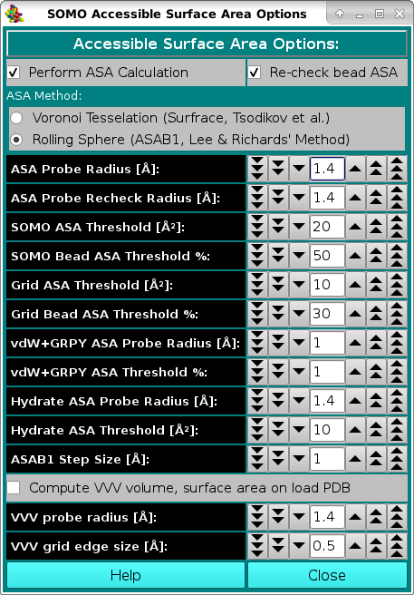

|
Manual
|
SOMO - Accessible Surface Area (ASA) Options Module:
Last updated: June 2024

In this module, you can set the parameters and options for calculating the Accessible Surface Area (ASA) of your structure. This information is then used by the model builder to discriminate exposed from buried beads, allowing the exclusion of the latter from the hydrodynamic computations. In addition, it offers the possibility of re-checking the ASA of the beads in the final bead model, to better discriminate buried from exposed beads. The ASA module offers two alternative methods, a Voronoi tessellation approach which is an implementation of SurfRace, kindly provided by O.V. Tsodikov (Tsodikov OV, Record MT Jr, Sergeev YV. Novel computer program for fast exact calculation of accessible and molecular surface areas and average surface curvature. J. Comput. Chem. 23:600-609, 2002), and a rolling sphere algorithm (ASAB1, see Spotorno et al., Eur. J. Biophys. 25:373-384, 26:417, 1997; Rai et al., Structure 13:723-734, 2005) based on Lee and Richards' method (Lee B, Richards FM. The interpretation of protein structures: estimation of static accessibility. J. Mol. Biol. 55:379-400, 1971).
During our testing, we found that the Voronoi method performs well for relatively small, compact structures, but was a bit hectic when examining large structures, while ASAB1 was more reliable and is thus presented as the default option. As for the bead re-check, only the rolling sphere method is available.
The first two checkboxes, Perform ASA Calculation and Re-check bead ASA, enable or disable these operations. Both are recommended (default).
Next is the choice of the ASA method for operating on the atomic structure (PDB file), Voronoi Tessellation or Rolling Sphere. Rolling Sphere is the default.
-
In the ASA Probe Radius [Å] field, you set the radius of the hypothetical (water) molecule used to probe the surface of the molecule for accessibility. The default value is 1.4 Å.
-
Likewise, in the ASA Probe Recheck Radius [Å] field, you set the radius of the probe used to re-check the beads in the final bead model for accessibility. This entry is used for all bead models except for vdW models when their hydrodynamic properties are then calculated with the GRPY method (see below). The default value is 1.4 Å.
-
In the SOMO ASA Threshold [Å2] field, you set the accessible surface area threshold above which a main- or side-chain will be considered exposed to the solvent in the SoMo method. The default value is 20 Å2.
-
The SOMO Bead ASA Threshold % field lets you set the % of the surface of a bead that must be at least accessible to re-classify as exposed a bead previously considered to be buried in the SoMo method. Beads are initially assigned as being buried or exposed based on the status of the main- or side-chain they represent.
However, during overlap removal some beads initially classified as buried may become exposed, hence the need to re-check their status. This operation is performed if the Re-check bead ASA checkbox is selected (recommended).
The default value is 50% for SoMo-type beads.
-
Likewise, in the Grid ASA Threshold [Å2] field, you set the accessible surface area threshold above which primary beads will be considered to be exposed to the solvent in the AtoB (Grid) method. This will allow a better treatment of the beads during the overlap removal phase. The default value is 10 Å2.
-
The Grid Bead ASA Threshold % field lets you set the % of the surface of a bead that must be at least accessible to re-classify as exposed a bead previously considered to be buried in the Grid (AtoB) method. If the Enable ASA screening function in the SOMO Grid Function Options (AtoB) module is not selected, beads are all assigned as being buried, and their final status must be checked by the Re-check bead ASA routine. The default value is 30%.
-
In the vdW+GRPY ASA Probe Radius [Å] field, a different radius from the one utilized for all the previuosly-described operations is set for the identification of buried beads in vdW-type models when their hydrodynamic parameters are computed using the GRPY method. This is because in vdW models each atom is represented by a bead, and thus using the standard 1.4 Å water radius value will result in too many beads being considered as buried and thus potentially excluded from the hydrodynamic computations (see the Hydrodynamic Calculations Options). The default value is 1 Å.
-
Likewise, the vdW+GRPY ASA Threshold % field has been created to allow for a much lower % of the surface
of a vdW bead that must be at least accessible to avoid classifying it as buried and thus potentially being excluded from the hydrodynamic computations using the GRPY method (see the Hydrodynamic Calculations Options). This results because since in vdW-type models each bead represent an atom, and within a residue most atoms are chemically bound to other atoms, their free surface is much lower than the one we compute from their atomic radius. A better measure of their "starting" ASA would be to perform an ASA check on each atom within a residue like if it was completely isolated from all other residues. Waiting for this method to be implemented, currently (July 2024) a very low default value of 1% is set for this field.
Two new fields were added from the July 2024 release:
-
vdW Hydrate ASA Probe Radius [Å]: In the vdW with overlaps method, the pH-dependent number of the theoretically "bound" hydration waters is assigned to each hydratable atom. To avoid "hydrating" atoms that are not solvent accessible, an ASA check with the rolling-sphere method is performed on the entire structure beforehand, with a probe radius set in this field (default value: 1.4 Å).
-
vdW Hydrate ASA Threshold [Å2]: And in this field an ASA threshold is set to decide which "hydratable" atoms will be "hydrated" (default value: 10 Å2).
-
Finally, the ASAB1 Step Size [Å] field defines the increment between the 2D slices in which the structure (or the model) is subdivided in the rolling sphere method, which are then integrated. The default value is 1 Å.
Another volume and surface area calculation method, operating only on a PDB structure, is also offered within this module: selecting the Compute VVV volume, surface area on load PDB checkbox, our implementation of the "3V: Voss Volume Voxelator" program (see http://3vee.molmovdb.org/volumeCalc.php) will be launched, using the parameters indicated in the two fields below. The results can be an useful check against those produced by other calculations performed within US-SOMO.
VVV probe radius (A): is the size of the probe sphere used by 3V (default: 1.4 Å). For instance, a probe size of 0 Å returns the van der Walls surface of the structure, while a probe size of 1.4 Å produces the water accessible surface area (see http://3vee.molmovdb.org/glossary.php).
VVV grid edge size (A): controls the resolution at which the calculations are performed (default: 0.5 Å).
www contact: Emre Brookes
This document is part of the UltraScan Software Documentation
distribution.
Copyright © notice.
The latest version of this document can always be found at:
http://somo.aucsolutions.com
Last modified on June 12, 2024.